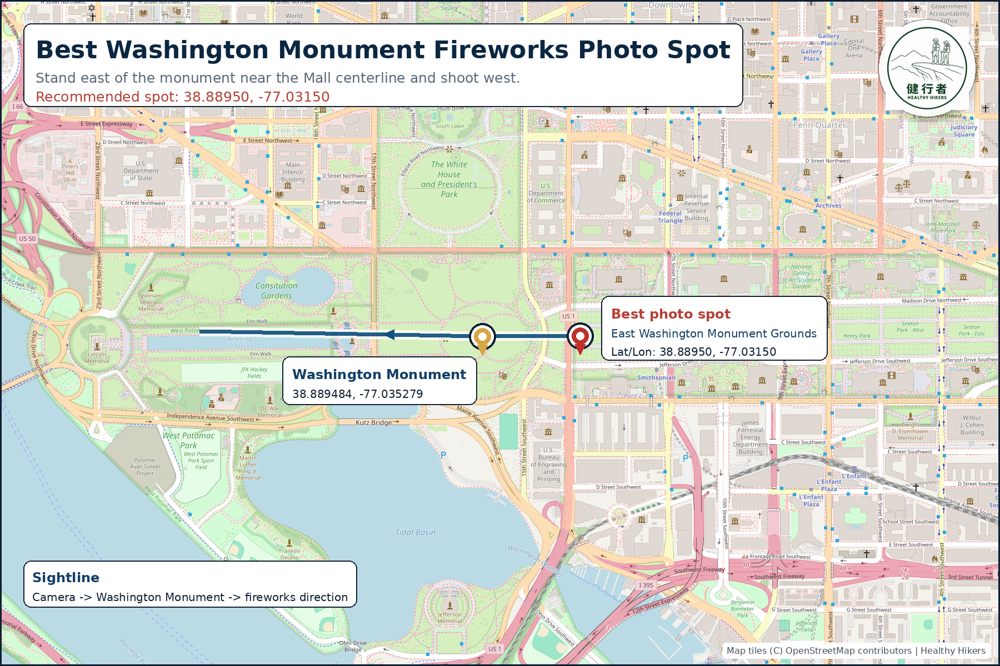

East Washington Monument Grounds
Best Photo Spot Map
Stand east of the Washington Monument near the Mall centerline and shoot west so the monument sits between the camera and the fireworks direction.
Recommended spot
38.88950, -77.03150

Map Notes
- The red marker is the recommended camera position: 38.88950, -77.03150.
- The gold marker is the Washington Monument.
- The blue line shows the shooting direction from the camera position through the monument toward the fireworks direction.
- Use the map for planning only; closures, security zones, crowds, and trees can affect access and visibility.